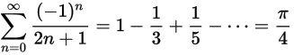
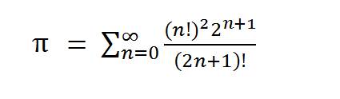

Ejercicios
- Realice un algoritmo que convierta su edad en segundos. El algoritmo debe recibir como datos de entrada los años, meses y días de su edad y calcular la cantidad de segundos que usted haya vivido.
- Realice un algoritmo que calcule la distancia entre dos puntos, tomando como datos de entrada las coordenadas de los puntos P1 y P2.
- Realizar un algoritmo que resuelve una ecuación de segundo grado mediante la fórmula general.
- Construya un algoritmo tal que reciba como datos la base y altura de un rectángulo, luego calcule el perímetro y la superficie del mismo.
- Realice un algoritmo que determine si un número es mayor o menor a 10.
- Realizar un algoritmo que solicite un número y determine si es positivo o negativo.
- Realizar un algoritmo para determinar si un número es par o impar.
- Haga un algoritmo para decidir si un número es divisible por 3 o no.
- Realizar un algoritmo que simule el juego: Piedra - Papel - Tijera.
- Escriba un algoritmo que determine si un año es bisiesto o no.
- Desarrolle un algoritmo para simular un volado. El usuario debe elegir cara o cruz y aleatoriamente se selecciona alguno de las dos posibilidades.
- Realizar un algoritmo que resuelve una ecuación de segundo grado mediante la fórmula general, haga la versión aumentada en la que sirve para determinar raíces reales e imaginarias.
- Hacer un algoritmo que reciba la fecha de nacimiento y determine su signo del Zodiaco.
- Hacer un algoritmo que solicite la edad de una persona y determine su categoría e acuerdo:
- Si la edad es mayor o igual a 0 y menor que 2 entonces es bebé
- Si la edad es mayor o igual a 2 y menor que 11 entonces es niño
- Si la edad es mayor o igual a 11 y menor que 18 entonces es adolescente
- Si la edad es mayor o igual a 18 y menor que 30 entonces es adulto joven
- Si la edad es mayor o igual a 30 y menor que 65 entonces es adulto
- Si la edad es mayor o igual a 65 entonces es de la tercera edad
- Realizar un algoritmo que solicite una calificación numérica del 0 al 10 y la convierta a la escala:
- [0, 6) => No Acreditado
- [6, 7.5) => Suficiente
- [7.5, 9) = > Bien
- [9, 10) => Muy Bien
- 10 => Líder de Acción Positiva
- Realice un algoritmo que calcule los impuestos que debe pagar un empleado. El algoritmo recibe como dato el
salario del empleado, debe verificar que sea válido (positivo), y calcular los impuestos que debe pagar de
acuerdo a la siguiente tabla.
El algoritmo debe imprimir el salario intacto, los impuestos retenidos y el salario menos los impuestos.
Rango del Salario
Porcentaje de Impuesto
hasta antes de $10,000
8%
desde $10,000 hasta antes de $35,000
12%
desde $35,000
20%
- El costo de las llamadas telefónicas internacionales depende de la zona geográfica en la que se encuentre el país destino
y del número de minutos hablados. En la siguiente tabla se presenta el costo del minuto por la zona. A cada zona se le ha
asociado una clave.
Construya un diagrama de flujo que permita calcular el costo de una llamada. El algoritmo debe recibir como datos la duración de la llamada en minutos y la clave de la zona a donde realizó la llamada. Imprima el costo de la llamada, si el usuario ingresa una clave incorrecta imprima un mensaje de error.
Clave
Zona
Precio
12
América del Norte
2
15
América Central
2.2
18
América del Sur
4.5
19
Europa
3.5
23
Asia
6
25
África
6
29
Oceanía
5
- Realizar un algoritmo que suma los primeros 100 números enteros.
- Realizar un algoritmo que imprime los primeros 100 números pares.
- Realizar un algoritmo que imprime los primeros 100 números impares.
-
Realice un algoritmo que calcule el promedio de las calificaciones de un alumno. El alumno deberá ingresar el número de materias que cursa y las calificaciones en cada una de ellas. El algoritmo debe calular e imprimir el promedio y determinar si tiene derecho a beca o no.
- Realice un algoritmo que lea un número entero
Ny calcule la siguiente serie: - Realice un algoritmo que solicite un número
n, verifique que sea positivo y calcule la suma:1 + 1/2 + 1/3 + ... + 1/n - Realice un algoritmo que solicite un número
n, verifique que sea positivo y calcule la suma:1 + 3 + 5 + 7 + 9 + ... + (2n+1) - Escriba un diagrama de flujo que lea un número
Ny calcule el resultado de la serie:1 - 1/2 + 1/3 - 1/4 + ... ± N - Haga un algoritmo que solicite un número positivo
n, verifique que sea positivo y calcule el producto:1*3*5*7*9*...*n - Realizar un algoritmo que calcule la potencia de un número
xelevado a un número enteronmediante multiplicaciones sucesivas. -
Realizar un algoritmo que solcite dos números enteros y calcule el producto de dichos números mediante sumas sucesivas.
- Realizar un algoritmo que calcule la raíz cuadrada de un número
xentero mediante el algoritmo babilónico. - Realizar un algoritmo que calcule la división de dos números mediante restas sucesivas.
-
Realizar un algoritmo que solicite un número entero positivo, verifique que lo sea y posteriormente determine los números que son divisibles desde 1 hasta ese número.
-
Realizar un algoritmo que solicite un número
xal usuario, verifique que sea positivo y determine los números que sean divisibles entre 5 ó 7 menores o iguales al númerox. - Realice un algoritmo que solicite un número entero, verifique que sea positivo y determine si el número es primo.
- Realice un algoritmo que solicite un número entero al usuario y muestre en pantalla todos los años bisiestos que hay desde 0 hasta el número que ingresó el usuario.
- Realice un algoritmo que genere
Nnúmeros aleatorios, y determine si cada número generado es par o impar. Realizar un algoritmo que calcule el factorial de un número entero
n. Considere que sines positivo el factorial es1*2*3*4*...*n, sines cero por definición el factorial es 1 y sines negativo el factorial no está definido. El algoritmo debe determinar el caso que corresponda y realizarlo, si fuera negativo mande un mensaje de error al usuario.- Realizar un algoritmo que solicite un número
ny calcule la serie de Fibonacci. - Realizar un algoritmo que calcule una aproximación al número
π. - Realizar un algoritmo que calcule una aproximación al número de Euler.
- Realizar un algoritmo que resuelve una integral definida mediante la definición por sumas de Riemann.
- La conjetura de ULAM toma su nombre en honor al matemático S. Ulam.
Dicha conjetura dice lo siguiente:
- Comience con un número entero positivo cualquiera
- Si es par divídalo entre 2, si es impar multiplíquelo por 3 y agréguele 1
- Obtenga enteros sucesivamente repitiendo el proceso
- Al final, obtendrá el número 1 independientemente del entero inicial.
- Supóngase que en una reciente elección hubo cuatro candidatos (con identificadores 1, 2, 3 y 4). Usted habrá de encontrar, mediante un algoritmo,
el número de votos correspondientes a cada candidato y el porcentaje que obtuvo respecto al total de votantes. El usuario teclea los votos de manera
desorganizada, tal y como se obtuvieron en la elección. Para indicar que el usuario ha terminado de ingresar votos teclea un cero. Observe, como
ejemplo la siguiente lista:
1 3 4 1 2 4 3 2 2 1 1 3 4 2 2 0
Donde 1 representa un voto para el candidato 1, 2 representa un voto para el candidato 2 y así sucesivamente. Construya un algoritmo que haga el conteo de los votos totales y por candidato, además calcule el porcentaje de los votos obtenidos por cada candidato. - Construya un algoritmo que dado
Nnúmeros enteros como dato, calcule el mayor y el menor de estos números. Considere que el usuario ingresará la cantidad de números y posteriormente los números. - Haga una variante del programa anterior pero en esta ocasión sólo se aceptarán números positivos, la cantidad de números es indefinida y se indicará el final del ingreso de números con un "-1".
- Desarrolle un algoritmo que consiste en adivinar el número mágico. El algoritmo debe generar aleatoriamente un número entre 1 y 100, el usuario debe adivinarlo. El usuario debe ingresar un número y el algoritmo le dirá si el número que ingresó es mayor o menor que el mágico. Si el usuario adivina, el algoritmo debe terminar e indicar el número de intentos que le tomó al usuario. El usuario tiene un número ilimitado de intentos para adivinar.
- Un vendedor ha hecho una serie de ventas y desea conocer aquellas de $200 o menos, las mayores de $200 pero inferiores a $400, y el número de ventas de $400 o superiores. Haga un algoritmo que le proporcione al vendedor esta información después de haber leído los datos de entrada. El número de ventas es indefinido y el usuario indicará que habrá terminado de ingresar datos introduciendo "-1".
- Haga un algoritmo para calcular lo que hay que pagar por una llamada telefónica. Se ingresa el tipo de llamada (Internacional, Nacional o Local)
y la duración en minutos. El criterio que se sigue para calcular el costo de la llamada es el siguiente:
Internacional
3 primeros minutos $7.59
Cada minuto adicional $3.03
Nacional
3 primeros minutos $1.20
Cada minuto adicional $0.48
Local
$0.60 por minuto.
El usuario habrá de ingresar tipo y duración de la llamada, el programa recibirá una cantidad indefinida de datos de llamadas hasta que reciba “-1” como tipo y duración.
- Realizar un algoritmo que determina e imprime los números primos que hay de 1 al 100.
- Dados los números naturales ordenados, realice un algoritmo que sume estos números mientras el resultados sea menor que 1000 y que diga cuántos números naturales son necesarios para conseguirlo.
-
Realizar un algoritmo que solicite un número entero positivo y calcule el factorial de todos los números enteros que hay entre
1y ese número. Verifique si el número que ingreso el usuario es positivo. Imprima en cada caso una tabla con los resultados. Por ejemplo, si el usuario ingresa5el programa debería imprimir:x x! 1 1 2 2 3 6 4 24 5 120 Realice una variante del algoritmo anterior, pero ahora determine si cada número es primo o no. Por ejemplo, si el usuario ingresa
6el programa debería imprimir:x ¿Primo? 1 Si 2 Si 3 Si 4 No 5 Si 6 No - Realizar un algoritmo que solicite un número entero positivo y calcule la raíz cuadrada (mediante el algoritmo babilónico) de todos los números enteros que hay entre 0 y ese número.
- Realizar un algoritmo y programa en Gambas que solicite dos números enteros positivos, base y altura respectivamente, y dibuje un rectángulo lleno de asteriscos.
- Realizar un programa que solicite dos números enteros positivos
MyN, y despliegue en pantalla algo similar a esto:1
2
3
4
5
2
4
6
8
10
3
6
9
12
15
4
8
12
16
20
Para este ejemplo
M=4yN=5. - Realizar un programa que solicite dos números enteros positivos
MyN, y despliegue en pantalla algo similar a esto:1
2
3
4
5
2
4
9
16
25
3
8
27
64
125
4
16
81
256
625
Para este ejemplo
M=4yN=5. En una Universidad se desea saber el promedio de los alumnos inscritos. Desarrolle un programa que solicite el número de estudiantes y el número de materias (todos cursan las mismas materias) y calcule el promedio para cada alumno. Utilice ciclos anidados.
Escriba un algoritmo y desarrolle un programa que solicite dos números enteros positivos
MyNque forman una matrizMxN. Llene todos los elementos de esa matriz con valores aleatorios entre 0 y 100. Imprima en pantalla la matriz resultante.-
Escribir un algoritmo que solicite un número
N, verifique que sea positivo e imprima:1
22
333
4444
55555
...
N veces N -
Escribir un algoritmo que solicite un número
N, verifique que sea positivo e imprima:N veces N
...
55555
4444
333
22
1 -
Escribir un algoritmo que solicite un número
N, verifique que sea positivo e imprima:1
1 2
1 2 3
1 2 3 4
1 2 3
1 2
1 -
Escribir un algoritmo que solicite un número
Npara formar una matrizNxN. Verifique que el número sea positivo e imprima una matriz cuya diagonal tenga0y el resto1. Por ejemplo: siN=5se debería imprimir lo siguiente0 1 1 1 1
1 0 1 1 1
1 1 0 1 1
1 1 1 0 1
1 1 1 1 0 -
Escribir un algoritmo que solicite un número
Npara formar una matrizNxN. Verifique que el número sea positivo e imprima una matriz cuya diagonal tenga0, los números superiores a la diagonal deben ser1y los inferiores2. Por ejemplo: siN=5se debería imprimir lo siguiente0 1 1 1 1
2 0 1 1 1
2 2 0 1 1
2 2 2 0 1
2 2 2 2 0 -
Escribir un algoritmo que solicite dos números
MyNpara formar una matrizMxN. Verifique que los números sean positivos e imprima una matriz llena de números consecutivos. Por ejemplo: siM=4yN=6se debería imprimir lo siguiente1 2 3 4 5 6
7 8 9 0 1 2
3 4 5 6 7 8
9 0 1 2 3 4 -
Escribir un programa en Gambas que solicite dos números enteros positivos
xyny obtenga el resultado de la operaciónx^n. La operación deberá realizarse con ciclos anidados empleando únicamente sumas. En una Universidad se desea saber el promedio de los alumnos inscritos. Desarrolle un programa que solicite el número de estudiantes y el número de materias (todos cursan las mismas materias) y calcule el promedio para cada alumno. Si un alumno tiene promedio mínimo de 8, tendrá derecho a beca. Determine cuantos alumnos tienen derecho a beca y cuantos no tienen derecho a beca. Utilice ciclos anidados.
-
Desarrolle un programa que solicite un número entero y genere las "tablas de multiplicar" hasta el número que haya ingresado el usuario. Utilice ciclos anidados. Por ejemplo, si el usuario ingresa
2, el programa debería imprimir algo similar a esto:1x1=1 1x2=2 1x3=3 1x4=4 1x5=5 1x6=6 1x7=7 1x8=5 1x9=5 1x10=10 2x1=2 2x2=4 2x3=6 2x4=8 2x5=10 2x6=12 2x7=14 2x8=16 2x9=18 2x10=20 -
Realice un programa que guarde 12 calificaciones en un arreglo y calcule el promedio de las calificaciones. El programa debe recibir las calificaciones y verificar que sean válidas, es decir que estén entre 0 y 10.
Public Sub Main() Dim calificaciones As New Float[12] Dim i As Byte Dim suma As Float suma = 0 Print "Introduza las calificaciones" For i = 0 To 11 Print "Alumno "; i + 1; " = "; Input calificaciones[i] If calificaciones[i] < 0 Print "Calificacion no valida" calificaciones[i] = 0 Else If calificaciones[i] > 10 Print "Calificacion no valida" calificaciones[i] = 0 Else Print "Calificacion valida" suma = suma + calificaciones[i] Endif Next Print "El promedio es = "; suma / 12 End Haga una variante del programa anterior pero que ahora determine la calificación mayor y la menor del arreglo.
Public Sub Main() Dim calificaciones As New Float[12] Dim i As Byte Dim mayor, menor As Float Print "Ingrese las calificaciones" For i = 0 To 11 Print "Alumno "; i + 1; " = "; Input calificaciones[i] Next ' Suponiendo que la 1a calificacion es la menor y mayor mayor = calificaciones[0] menor = calificaciones[0] For i = 0 To 11 If calificaciones[i] > mayor mayor = calificaciones[i] Endif If calificaciones[i] < menor menor = calificaciones[i] Endif Next Print "La calificacion mayor es = "; mayor Print "La calificacion menor es = "; menor End-
Haga un programa que haga una lista de calificaciones de cierto grupo. El programa debe solicitar nombre y calificación de cada alumno y guardar estos datos en un arreglo. Al final se debe imprimir el contenido del arreglo.
' Declaracion de una constante N Public Const N As Byte = 5 Public Sub Main() Dim calificaciones As New Float[N] Dim nombres As New String[N] Dim i As Byte ' Introduccion de datos For i = 0 To N - 1 Print "Nombre Alumno "; i + 1; ": "; Input nombres[i] Print "Calificacion: "; Input calificaciones[i] Next Print "Lista de calificaciones" For i = 0 To N - 1 Print i + 1, nombres[i], calificaciones[i] Next End -
En un arreglo unidimensional se ha almacenado el número total de toneladas de cereales cosechadas durante cada mes del año anterior. Construya un diagrama de flujo que proporcione la siguiente información:
- El promedio anual de toneladas cosechadas
- ¿Cuántos meses tuvieron una cosecha superior al promedio anual?
- ¿Cuántos meses tuvieron una cosecha inferior al promedio anual?
- ¿Cuál fue el mes en el que se produjeron mayor número de toneladas?
-
Haga un programa que solicite el contenido de dos vectores unidimensionales y realice la suma de ellos. Solicite al usuario las dimensiones de los vectores y los elementos de cada uno de ellos. Considere que los dos vectores tienen las mismas dimensiones.
' Declaracion de una constante N Public Const N As Byte = 50 Public Sub Main() ' Se declaran los arreglos de tamaño N Dim a, b, c As New Integer[N] Dim i, tamano As Byte Print "Introduzca las dimesiones de sus vectores" Input tamano ' Si el tamaño que introdujo el usuario es mayor que el ' tamaño declarado de los arreglos, se marca un error If tamano > N Then Print "Demasiado grande" Else ' Introduccion de datos For i = 0 To tamano - 1 Print "a["; i + 1; "] = "; Input a[i] Print "b["; i + 1; "] = "; Input b[i] Next ' Suma e impresion de los vectores Print "La suma de los vectores es: " For i = 0 To tamano - 1 c[i] = a[i] + b[i] Print "c["; i + 1; "] = "; c[i] Next Endif End -
Escriba un programa que reciba como entrada un arreglo unidimensional de enteros ordenados (posiblemente repetidos) y genere como salida una lista de los números enteros.
-
Escriba un programa que reciba como entrada un arreglo unidimensional de enteros ordenados (posiblemente repetidos) y genere como salida una lista de los números enteros, pero sin repeticiones.
-
En un arreglo unidimensional se almacenan las calificaciones de
Nalumnos. Construya un programa que permita ingresar calificaciones de losNalumnos, calcular e imprimir lo siguiente:- El promedio general del grupo
- Número de alumnos aprobados y reprobados.
- Porcentaje de alumnos aprobados y reprobados.
- Número de alumnos cuya calificación fue mayor a 8.
Ny debe impedirse que su valor sea mayor que 100.' Declaracion de una constante N Public Const N As Byte = 10 Public Sub Main() Dim calificaciones As New Float[N] Dim nombres As New String[N] Dim i, nA, nR, beca As Byte Dim suma As Float suma = 0 nA = 0 nR = 0 beca = 0 ' Introducción de los datos de la lista de alumnos Print "Introduzca las calificaciones" For i = 0 To N - 1 Print "Nombre Alumno "; i + 1; ": "; Input nombres[i] Print "Calificacion de "; nombres[i]; ": "; Input calificaciones[i] Next For i = 0 To N - 1 suma = suma + calificaciones[i] If calificaciones[i] >= 6 Then ' Aprobados nA = nA + 1 If calificaciones[i] >= 8 Then ' Los que conservan beca beca = beca + 1 Endif Else ' Reprobados nR = nR + 1 Endif Next Print "El promedio del grupo es: "; suma / N Print "Numero de aprobados: "; nA Print "Numero de reprobados: "; nR Print "Porcentaje de Aprobación: "; nA / N * 100; "%" Print "Porcentaje de Reprobación: "; nR / N * 100; "%" Print "Alumnos de que conservan la beca: "; beca End -
En dos arreglos unidimensionales se almacenan los nombres y calificaciones de
Nalumnos respectivamente. Construya un programa que permita ingresar los nombres y calificaciones de losNalumnos, y calcular:- Desviación estándar
- Varianza
- Nombre del alumno con calificación mayor
- Nombre del alumno con calificación menor
-
Se dice que un número entero positivo
Nes un número primo si los únicos enteros positivos que lo dividen son exactamente 1 yN. Utilice un arreglo para almacenar los primeros 30 números primos e imprimirlos en pantalla. -
Realizar un programa que solicite 10 temperaturas. Almacenar las temperaturas en un arreglo e imprima en pantalla el mensaje de acuerdo a las siguientes reglas:
- Si la temperatura es mayor o igual que 28°, imprimir, Primavera
- Si es menor de 28° hasta 22°, imprimir, Verano
- Si es menor de 22°, imprimir, Otoño
- Si es menor de 19°, imprimir, Invierno
-
Desarrollar un programa que genere una lista de 20 números aleatorios entre 0 y 100 y los almacene en un arreglo unidimensional. Posteriormente pida al usuario un número
ry determine el numero de veces que se encuentra en la lista o no. También determine lo siguiente:- ¿Cuántos números aleatorios son mayores que
r? - ¿Cuántos números aleatorios son menores que
r?
- ¿Cuántos números aleatorios son mayores que
-
Haga un programa que solicite el contenido de una matriz
3x3y lo imprima en pantalla. -
Tomando como base el programa anterior, solicite posteriormente un escalar
ky realice la multiplicación de la matriz por este escalar. Imprima la matriz resultante.Public Const M As Byte = 3 Public Const N As Byte = 3 Public Sub Main() Dim a As New Integer[M, N] Dim i, j As Byte Dim k As Integer Print "Ingrese los valores de la matriz" For i = 0 To M - 1 For j = 0 To N - 1 Print "("; i + 1; ", "; j + 1; ") = "; Input a[i, j] Next Next Print "Ingrese un escalar k" Input k For i = 0 To M - 1 For j = 0 To N - 1 a[i, j] = k * a[i, j] Print a[i, j], Next Print "" Next End -
Haga una variante del programa anterior pero ahora solo multiplique las posiciones
(1,1),(2,2)y(3,3)de la matriz por el escalar. Imprima el resultado. -
Haga un programa que sume dos matrices
NxN. El programa debe solicitarN, el contenido de las matrices, realizar la operación e imprimir el resultado. -
Haga un programa que multiplique dos matrices
3x3. El programa debe solicitar el contenido de las matrices, realizar la operación e imprimir el resultado. -
Realice un programa que dada una una matriz
MxN(utilice constantes para estos valores) sea llenada con números aleatorios entre 1 y 10 e imprímala en pantalla. Finalmente determine cual de los elementos de la matriz es el mayor y cual es el menor y sus respectivas posiciones en la matriz. -
Dada una matriz cuadrada
Ade dimensionesNxN, realice un programa en Gambas que permita determinar si dicha matriz es simétrica. Se considera simétrica una matriz que siA[i,j] = A[j,i]se cumple para todos los elementosi,jde la matriz. -
Dada una matriz
Ade dimensionesMxN, realice un programa en Gambas que imprima la matriz tanspuesta. Una matriz traspuesta es aquella en la que se intercambian renglones por columnas y viceversa. -
La distribución de las butacas de un cine se puede modelar por una arreglo bidimensional
MxN, dondeM=20es el número de filas yN=15el número de butacas por fila. Desarrolle un programa que solicite y asigne los lugares de las personas que compran boletos, se debe verificar que el lugar está disponible antes de asignarlo. Solicite al usuario la ubicación de asiento deseado mediante el número de fila y columna donde se encuentra dentro de la sala de cine. Finalice la venta de boletos ingresando un "-1", posteriormente al finalizar la venta de boletos determine entonces la cantidad de lugares ocupados, disponibles y el ingreso total obtenido por la venta de los boletos. Considere que inicialmente la sala está vacía, por lo tanto, inicialmente el arreglo debe estar lleno de ceros. El boleto en cualquier localidad tiene un costo de 48 pesos.
Tip: Un lugar vacío puede ser una localidad en el arreglo con un 0, y un lugar vendido una localidad en el arreglo con un 1. -
En una Universidad se desea saber el promedio de los alumnos inscritos. Desarrolle un programa que solicite el número de estudiantes y el número de materias (todos los alumnos cursan las mismas materias) y calcule el promedio para cada alumno. Utilice ciclos anidados.
-
Escriba un programa que reciba como datos dos arreglos bidimiensionales
a[4][5]yb[5][4], calcule la suma deay la transpuesta deb. Almacene el resultado en un arreglo bidimensionalc. -
Una empresa automotriz necesita un programa para manejar los montos de ventas de sus 6 sucursales, a lo largo de los últimos 5 años. Los datos son almacenados de la siguiente forma:
Considere que en la matriz los renglones corresponden a los años y las columnas correspondena a las sucursales.Monto1,1
Monto1,2
...
Monto1,6
Monto2,1
Monto2,2
...
Monto2,6
...
...
...
...
Monto5,1
Monto5,2
...
Monto5,6
La información que necesitan los directores de la empresa para tomar decisiones es la siguiente:- Sucursal que más ha vendido en los 5 años
- Promedio de ventas al año
- Año con mayor promedio de ventas
-
En la secretaría de Turismo de México se almacena la información sobre el número de visitantes mensuales de los 10 principales centros turísticos del país, en los últimos cinco años. Construya un programa que proporcione la siguiente información:
- El total de visitantes a cada uno de los centros turísticos
- Los centros turísticos más y menos visitados en los últimos cinco años, junto con el número de visitantes a cada uno de esos centros.
- El mes del último año con mayor y menor afluencia turística, junto con el número de visitantes.
- Realizar un algoritmo que calcule una aproximación al número
π. -
Desarrolle un programa en Gambas que calcule áreas de figuras geométricas básicas. Despliegue en pantalla un menú con las opciones:
- Circunferencia
- Rectángulo
- Triángulo
- Trapecio
- Salir
-
Haga un programa en Gambas que muestre un menú al usuario que le permite hacer conversiones de unidades. El menú debe permitir hacer conversiones de temperatura (Fareheit a Celcius y viceversa), masa (Libras a Kilogramos y viceversa) y longitud (millas a metros y viceversa). El menú debe mostrar 4 opciones al usuario: 1. Temperatura, 2. Masa, 3. Longitud y 4. Finalizar. El programa debe continuar hasta que el usuario seleccione la opción 4. Utilice funciones para hacer las conversiones y ciclos para hacer que el programa no termine hasta que se seleccione la opción "4. Finalizar".
Public Sub Main() Dim opcion As Byte Repeat Print "Conversor de unidades. Seleccione la opcion deseada" Print "1. Temperatura" Print "2. Longitud" Print "3. Masa" Print "4. Salir" Input opcion Select opcion Case 1 'Temperatura temperatura() Case 2 'Longitud longitud() Case 3 'Masa masa() Case 4 ' Salir Print "Gracias por usar el sistema" Default Print "Opcion incorrecta, usuario no valido" End Select Until opcion = 4 End Public Sub temperatura() Dim opcion As Byte Dim x, y As Float Print "1. Farenheit a Celsius" Print "2. Celsius a Farenheit" Input opcion Select opcion Case 1 ' F a C Print "Ingrese temperatura en F" Input x y = (x - 32) / 1.8 Print x; "ºF = "; y; "ºC" Case 2 ' C a F Print "Ingrese temperatura en C" Input x y = 1.8 * x + 32 Print x; "ºC = "; y; "ºF" Default Print "Opcion incorrecta, usuario no valido" End Select End Public Sub longitud() Dim opcion As Byte Dim x, y As Float Print "1. Millas a Metros" Print "2. Metros a Millas" Input opcion Select opcion Case 1 ' Mi a Me Print "Ingrese la distancia en millas" Input x y = x * 1609 Print x; " millas = "; y; " metros" Case 2 'Me a Mi Print "Ingrese la distancia en metros" Input x y = x / 1609 Print x; " metros = "; y; " millas" Default Print "Opcion incorrecta, usuario no valido" End Select End Public Sub masa() Dim opcion As Byte Dim x, y As Float Print "1. Libras a Kilogramos" Print "2. Kilogramos a Libras" Input opcion Select opcion Case 1 ' Lb a kg Print "Ingrese masa en libras" Input x y = x * 0.453592 Print x; " lb = "; y; " kg" Case 2 'kg a Lb Print "Ingrese masa en kilogramos" Input x y = x / 0.453592 Print x; " kg = "; y; " lb" Default Print "Opcion incorrecta, usuario no valido" End Select End -
Realizar un programa que solicite 10 temperaturas. Almacenar las temperaturas en un arreglo e imprima en pantalla el mensaje de acuerdo a las siguientes reglas:
- Si la temperatura es mayor o igual que 28°, imprimir, Primavera
- Si es menor de 28° hasta 22°, imprimir, Verano
- Si es menor de 22°, imprimir, Otoño
- Si es menor de 19°, imprimir, Invierno
-
Realice un programa en Gambas que genere una matriz
5x5con números aleatorios entre0y50. Posteriormente obtenga lo siguiente:- La suma de todos los elementos de los renglones 1, 3 y 5
- La suma de todos los elementos de las columnas 2 y 4
- La suma de los elementos en la diagonal principal de la matriz
- La suma de los elementos en la diagonal invertida de la matriz
Básicos
Condicionales
Ciclos

Ciclos Anidados
Arreglos Unidimensionales
Arreglos Multidimensionales
Funciones y subrutinas
